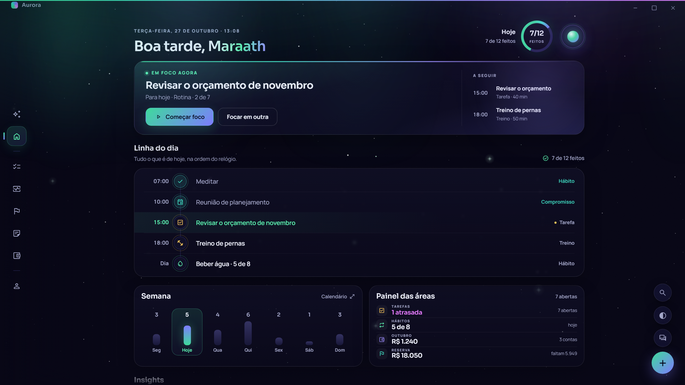
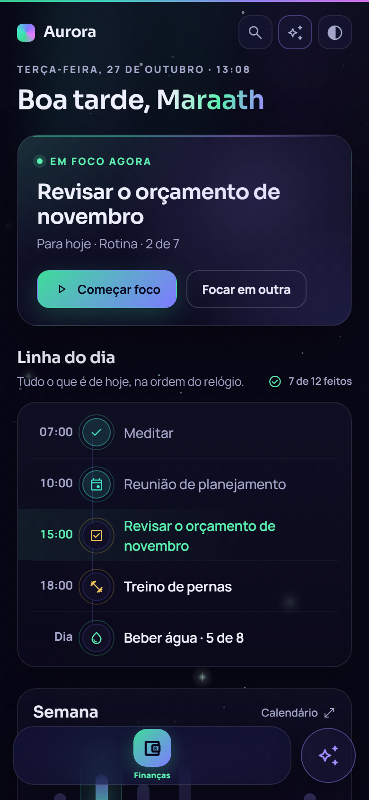

A
Aurora Viva
a evolução fiel: mesmo desenho, material muito melhor
- landscapeCortinas de aurora de verdade no topo (três camadas e duas cortinas em movimento lento). O céu deixa de ser dois borrões.
- line_weightFio de luz de 1 px no topo dos cartões e sombra mais funda: o cartão ganha borda iluminada.
- donut_largeAnel do dia no cabeçalho (7/12) e números de destaque maiores.
- timelineLinha do dia com trilho vertical e nó colorido por tipo; o item de agora ganha faixa e barra em degradê.
- playlist_playEm foco com fila “A seguir” dentro do cartão e painel das áreas em lista densa.